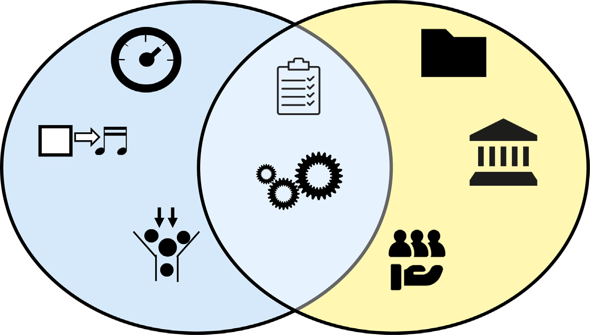

Helena Miton1,2,3,* 和 Joshua C. Jackson
在过去十年中，新研究展示了人类集体如何能够开发出单个个体无法独立发现的技术。然而，这些研究往往忽视了技术如何变得如此复杂，以至于个体无法独自操作它。在这种技术复杂性水平上，分配认知是减少个体认知负荷的必要过程。然而，随着技术系统变得更大，系统中的个体变得更加专业化，分配认知也会带来协调成本。我们描述了一系列广泛的文化创新，这些创新通过减少认知负荷、减少协调成本或两者兼而有之来促进认知分配。初步证据表明，这些文化创新与技术复杂性共同演化。
人类技术成功的一个重要因素是我们物种作为”集体大脑”在群体中工作的能力，能够以导致累积文化演化(Cumulative Cultural Evolution)的方式选择和保留创新[1-3]。通过社会学习(Social Learning)，人类可以跨代传递和改进技术，而不是通过试错重新发现相同的解决方案[2,4]。这个过程使人类群体能够演化出单个个体无法独立发现的技术。然而，随着技术变得更加复杂，它达到了一个个体也无法独自操作的程度[5]。当没有个体能够操作整个技术时，技术系统如何运作?
本文的前提是，使用复杂技术需要分配认知。换句话说，它要求个体只承担一部分认知劳动，并将其余部分分配给其他人或物理世界。成功分配认知进一步要求人们协调这种认知劳动的分工。从集体智能(Collective Intelligence)的最新实验室和实地研究来看，我们认为当人们在小群体中解决问题时，可以自发地协调认知劳动的分工[6-8]，但当群体变大或包含更多专家时，这种协调就会崩溃[9-12]。
为了缓解这种崩溃，我们认为复杂技术与成功分配认知的创新在文化上共同演化。这些创新要么在不产生高协调成本的情况下减少个体的认知负荷(Cognitive Load)，要么减少协调成本，要么同时做到这两点。例如，商业航空不仅依赖于喷气发动机和先进控制系统等复杂技术，还依赖于在没有过度协调成本的情况下分配认知的文化创新，如彩色编码的驾驶舱仪表板和航空检查清单(Checklists)。
从历史和民族志记录中，我们发现并描述了其中几种文化创新，并将它们与技术复杂性的进步联系起来。理解这种共同演化展示了自动化、文档、检查清单、标准化和管理等多样化的现代现象如何可能在类似的压力下演化以服务于类似的功能。这些现象都是分配认知的创新，而不是使技术更加复杂。
在获取和使用技术时，人类可以依赖两种形式的知识。第一种形式，直接知识(Direct Knowledge)，指的是智能体对技术的自身表征。它可以涉及
检查清单(Checklists): 某个过程中涉及的有序步骤列表，例如个体需要执行的操作，或团队成员应如何沟通。
认知负荷(Cognitive Load): 信息和计算的数量。在这里，我们
1斯坦福大学商学院，斯坦福，加州 94305，美国 2芝加哥大学布斯商学院，芝加哥，伊利诺伊州 60637，美国 3芝加哥大学数据科学研究所，芝加哥，伊利诺伊州 60637，美国
*通讯作者: miton@stanford.edu (H. Miton)
因果知识，即关于技术如何工作的知识[13]，或者关于如何操作技术的隐性知识[14,15]。第二种形式是分布式知识(distributional knowledge)，指的是关于某个系统中谁或什么拥有直接知识的元表征[16]。在任何认知分布的系统中都需要分布式知识，无论是在劳动分工中跨人员分布[17,18]，还是跨人们的思维和物理世界(如身体、外部环境或工具)分布[19]。
协调成本(Coordination costs)： 与试图协调群体中个体行动相关的时间、精力和其他资源成本。
文化创新(Cultural innovation)： 通过社会传播出现和传播的新文化变体。这些可以是思想、工具、制度和符号。
发展心理学、认知科学和社会心理学的研究强调了人类自发分配认知的非凡能力(见方框1)。这种知识在生命早期就出现了；3岁的儿童就能理解社会中存在具有专业知识的专家[17]，并且他们可以将一些认知操作外包给物理环境[20]。
累积文化演化(Cumulative cultural evolution)： 信息、行为或技术从个体到个体以及跨代的重复修改和社会学习，使其在某些期望的效率指标(通常是适应性的代理指标)上得到改进。
直接知识(Direct knowledge)： 关于某个主题(如技术)的表征。这包括完成技术系统中任务所需的程序性知识(“知道如何”)和陈述性知识(“知道什么”)。
劳动分工反过来帮助群体解决复杂任务。当斯密首次引入”劳动分工”一词时，他描述了一家大头针工厂，那里的劳动分工帮助工人比单独工作时更快地完成任务[21]。然而，劳动分工也能以斯密未曾描述的方式帮助群体解决复杂问题。通过劳动分工进行任务分解减少了个体思维的认知负荷。劳动分工还允许个体探索复杂解决方案空间的不同部分，这样他们就不会收敛到次优解决方案[8,14,22,23]。集体智慧的实证研究表明，当人们处理复杂问题时，会自发地通过劳动分工来利用这些好处。例如，在一项研究中，团队处理简单或复杂的问题。
离散化(Discretization)： 将连续度量转换为分类度量。
分配认知(Distributing cognition)： 将信息处理需求分配给多个人，或者跨人员和物理世界的各个部分的过程。我们使用”认知分配”一词来指代这种现象。这个过程不同于”分布式认知”，后者指的是认知科学中的一种方法，该方法认为认知是思维与其物理和社会环境相互作用的涌现效应。
方框1. 支持人类分布式认知的认知能力
分配认知是指将信息处理需求分配给多个人，或者跨人员和物理世界各个部分的过程。人类通过表征其他人能做什么、物理世界能做什么，以及通过将复杂任务分解为更小的元素来实现这一点，使他们能够在自己和环境之间分配认知劳动。
人类通过我们的心智理论或心智化来表征其他人能做什么[74,75]。从婴儿期开始，我们就使用朴素效用计算从人们行动的成本和收益中推断出他们的目标、意图和知识[76-78]。我们在社会学习[79-81]和协作[82-84]期间调用这些机制。儿童还可以评估他人的专业知识[85,86]，从很小的时候就能表征谁知道什么[17,18]。随着人们反复合作，这些机制支持交互记忆系统(transactive memory systems)的发展，在该系统中人们表征他人的知识和责任[16,87]。反过来，交互记忆系统可以帮助夫妻和专业团队比陌生人群体更有效地解决问题[88-91]。
人类还表征和利用物理世界的能力。儿童从很小的时候就推断工具、结构和环境的其他部分是功能性设计的[92]，并从形式推断这种功能[20]。我们还组织物理环境以减轻认知负担[29,93,94]。一个例子是厨师按使用顺序排列食材。这些被称为”认知亲和性”行为，因为它们减少了心理努力并改善了表现[93]。
分布式知识(Distributional knowledge)： 关于信息”在哪里”存储的元表征：这些可以涉及其他人(如专家)或物理世界(如工具和人工制品)。
文档化(Documentation)： 记录信息以确保操作、角色或程序的持久表征。
信息瓶颈(Information bottlenecks)： 元素
[分布式认知之所以成为可能，是因为将复杂任务或序列解析成更小的元素，这些元素可以] [[限制从系统的一个部分]]
[外包给他人或物理世界的某些部分。人类以一种考虑成本的方式分解任务，当他们] [[传递到另一个部分的信息量]]
[作为个体[[95]]和团队工作时[[96]]。我们可以根据] [。]
[物体显著性[[97]]和空间接近性[[98]]等线索来协调、分配和自我选择不同的角色。]
[2] [Trends in Cognitive Sciences, Month 2025, Vol. xx, No. xx]
[Trends in Cognitive Sciences]
[OPEN ACCESS]
在房间分配任务中，受试者在解决复杂问题时更有可能自发分配角色[[6]]。[管理者：][专门为协调和汇总]
[单个工作者的输入和输出而设计的角色。]
[标准化：][使材料、程序或角色]
然而，劳动分工也会带来协调成本，因为团队中的人必须[[符合标准的过程。]]
跟踪自己和他人的责任和知识。当团队规模扩大或团队成员变得更加专业化且他们的知识重叠减少时，这些协调成本就会上升。协调失败在集体智能研究中很少被讨论，也许是因为实验室研究中的团队规模较小，个体不是高度专业化的[[24]]。然而，许多现实世界的组织规模庞大，其工作人员更加专业化，这使得协调成本更高。例如，建造摩天大楼需要建筑师、工程师、起重机操作员和管道工之间的协调。这些专家不仅需要了解自己的贡献；他们还需要确保这些贡献(例如建筑物的管道)与其他专家的贡献(例如电气布线)兼容。
汇聚的证据表明，分布式知识在这些现实条件下可能会崩溃[[9-12]]。医院的实地研究表明，除非得到机构层面的支持，否则团队很难维持像定期检查这样的内部协调系统[[12]]。对汽车修理生产车间的民族志研究表明，专家经常发展出不同的术语，这使得跨专业协调变得具有挑战性[[10]]。最近一项关于在线多人游戏《一小时一生》的研究发现，随着团队规模的扩大，团队发展出技术专业化，但高度的专业化预示着人口崩溃[[25]]。这些失败的一个关键因素是具有不同角色和专业的工作人员之间协调不良。著名的工业灾难，如博帕尔毒气泄漏事件[[26]]、切尔诺贝利核电站熔毁[[27]]以及挑战者号和哥伦比亚号灾难[[28]]，都可以追溯到类似的协调失败(专栏2)。在其他情况下，比如1935年著名的波音飞行堡垒坠机事件，问题
[专栏2. 分布式认知的崩溃]
[工业灾难说明了认知分布不足的后果。这些例子展示了个体超载(飞行堡垒)或技术系统误呈现(见工业灾难)的危险。]
[飞行堡垒。]九十年前，新建的波音B-17”飞行堡垒”轰炸机在首次飞行期间坠毁，导致驾驶飞机的彼得·希尔少校丧生。飞机本身没有故障，希尔的训练也不差。他是空军中训练有素且备受尊敬的飞行员。坠机仅仅是因为该飞机的四引擎技术需要一系列复杂的操作，而希尔未能按照适当的顺序记住所有步骤[[60]]。这次坠机导致了航空检查清单的开发。
[工业灾难。]还有其他情况下，个体未能准确表征他们的技术系统。例如，1984年，印度博帕尔的联合碳化物农药厂向周围地区泄漏了40吨有毒气体，导致数千名工人和平民死亡。没有任何一个人对泄漏负责，联合碳化物公司雇佣了许多本可以预见到这一情况的工程师[[26]]。问题源于企业管理层和当地工厂工人之间对谁负责监督安全协议和制冷系统的混淆，这些系统本可以将有毒的异氰酸甲酯(MIC)保持在安全温度。另一个例子是三里岛事故，部分原因是先导操作阀门卡在打开状态，但在操作员的仪表板上显示为关闭状态，导致延迟识别该情况为冷却剂损失事故，并无法相应地做出反应[[99]]。
其他工业灾难源于复杂的因素组合，一些与认知负荷有关，一些与协调不当有关。例如，切尔诺贝利核电站熔毁部分是因为设计缺陷未能正确传达给反应堆操作员(反映了协调不当)，部分是因为太多责任集中在副总工程师手中(反映了分布不足)[[27]]。同年发生的挑战者号灾难被归因于美国国家航空航天局(NASA)的文化，即淡化警告并忽视安全专家的建议，除非他们有非凡的证据[[28]]。这种组织文化影
[有效地阻止了与系统运行至关重要的风险相关信息的传播，并在17年后哥伦比亚号航天飞机返回地球时解体时进一步导致了另一场灾难。]
[认知科学趋势，2025年月刊，第xx卷，第xx期] [[3]]
[认知科学趋势]
[开放获取]
问题更多在于认知分布不足，而不是协调成本；单个个体承担的认知负荷过高。
对这些案例的调查表明，复杂技术系统失败的两个可能原因反映了直接知识和分布式知识这两种形式。第一个原因是至少一个个体的认知负荷过高，例如波音空中堡垒坠机事件。第二个原因是认知已经被分布，但分布式知识变得不足，协调成本过高，例如博帕尔毒气泄漏事件。这两个原因并不相互排斥，两种形式的失败可能同时发生。[图1]展示了这两种原因导致的失败。
鉴于这两类失败可能构成的生存威胁，随着技术变得更加复杂，技术系统需要在平衡中行走。这种平衡涉及分布认知以维持个体可管理的认知负荷，同时不会过度增加协调成本。我们认为，促进成功认知分布的文化创新对于成功实现这种平衡至关重要。
[分布认知的文化创新]
人类设计了许多巧妙的解决方案来分布认知。设置日历提醒将记忆卸载到我们的智能手机上[[29]]。当我们用手指数数时，每根手指都是一个外部基准，简化了数数的心理努力[[29,30]]。认知生态学的民族志研究在航空驾驶舱[[31]]、利比里亚裁缝店[[32]]和机械化纺织工厂[[33]]中提供了这些解决方案的丰富描述性证据([专栏3])。
我们认为，与自发的认知分布方式(如交互记忆)不同，这些解决方案中的许多代表了可以在技术系统中工作的人们之间发明、修改和传播的文化创新，就像技术本身一样。这些创新要么用于减少认知负荷，促进协调，要么同时做到这两点([图1])。随着技术系统变得更大、更专业化，以及自发分布认知变得更具挑战性，采用这些创新可能变得至关重要。
一类文化创新通过分布认知来减少认知负荷，而不会过度增加协调成本[[34]]。这些创新创建了信息瓶颈或允许人们将认知卸载到技术本身上。
减少信息量。一些创新通过创建信息瓶颈来限制操作员必须处理的信息，从而减少认知负荷。例如，无菌驾驶舱规则在飞行的关键阶段(如滑行、起飞和降落)限制驾驶舱内的非必要活动和对话[[35]]。该规则已被改编用于护理，禁止在用药管理期间打扰[[36]]。核电站的”暗面板”概念具有类似功能：一些变量在隐藏的显示器上跟踪，当变量变得异常时才会出现[[37]]。这种界面允许操作员专注于相关变量，而不会被许多不同的显示器所淹没。
其他创新简化了信息的显示方式，通常通过离散化实现。车辆仪表板使用颜色编码将速度和燃油使用的连续指标离散化，使驾驶员可以轻松地将其分类为”有问题”与”无问题”。金融指数(如信用评分)和安全指数(如森林火灾表盘)通过将复杂的连续数据转换为简单的离散标签(如”优秀信用”或”极端火灾风险”)来做同样的事情[[38]]。在大规模
[4] [认知科学趋势，2025年月刊，第xx卷，第xx期]
[认知科学趋势]
[开放获取]
[技术复杂性增加]
[A] [B]
[技术失败]
[个体认知负荷过重] [协调失败] [C]
[示例：] [示例：] [空中堡垒坠机] [博帕尔毒气泄漏]
[D] [E]
[分布认知的文化创新]
[减少认知负荷] [降低协调成本]

[文档] [离散化] [检查清单]
[模态] [转换] [信息] [标准化] [集中化]
[信息] [瓶颈] [管理]
[趋势] [认知] [科学] [趋势]
技术复杂性的增加使得技术系统更容易失败，因为认知没有得到充分分布，个人承担了过重的认知负荷（路径A），或者因为个体之间的协调成本增加了（路径B）。使技术更加复杂的文化创新与分布认知的创新共同演化：技术复杂性应该使这些创新更有可能出现（路径C，向下），而这些创新使技术变得更加复杂成为可能（路径C，向上）。用于分布认知的文化创新可以在减少个人认知负荷失败后出现（路径D，白色），并随后使这些失败变得不太可能发生（路径D，灰色）。同样，这些文化创新可以在协调失败后出现（路径E，白色），并随后使这些失败变得不太可能发生（路径E，灰色）。
社会中，新的特质词汇通过将性格离散化为简单的术语（如”道德的”和”不道德的”）来实现相同的功能[39]。在社交媒体上，算法使用”违反社区标准”等类别将多维帖子内容离散化[40]。
认知科学趋势，2025年某月，第xx卷，第xx期 [5]
认知科学趋势
开放获取
分布认知的文化创新无处不在，构成了集体例程、新工具或正式化的角色系统。认知生态学的研究传统丰富地描述了现实世界中的这类创新[100]。在这里，我们描述了其中三项研究，它们关注工具在分布认知中的作用。
在Lave对利比里亚裁缝学徒模式的民族志研究中，她描述了”图案条”作为测量工具的使用，这些工具可以减轻心算负担[32]。图案条是纸质模板，其折叠编码了常见的身体比例。通过将条带贴合到客户的胸部并标记标准折叠点，学徒将困难的多步骤计算转换为相对简单的程序。该条带既是助记工具，也是协调几个学徒在单个工作台周围工作的共享参考。Lave发现，图案条使裁缝能够快速轻松地进行他们无法在纸笔测试中计算的测量。
雅卡尔织机于1804年获得专利，促进了复杂丝绸设计的大规模生产。图案设计师指定一个图案，然后将其编码在一系列木制打孔卡上。打孔卡包含确定织机线提升的具体指令，使织工能够创造复杂的图案，而无需手动决定每一步。织机减少了操作员的心理负担，并在设计师、切割师、操作员和织机本身之间分配认知劳动。织机还使错误立即可见（通过错误的打孔），并促进了图案的复制和存档。技术史学家和认知科学家将雅卡尔织机描述为外部符号存储的早期创新和软件计算的直接祖先[33,101]。
现代喷气机机组人员必须记住数十个关键空速阈值。飞行员不依赖个人记忆，而是在起飞前在空速带上设置小塑料”标记”来标记每个数字。这些标记减轻了飞行员记忆的压力，同时向驾驶舱的所有成员显示阈值，从而简化了协调。在Hutchins对商业航空公司驾驶舱的民族志分析中，他指出这些速度标记如何使机组人员作为紧密耦合的控制系统行动[31]。每个飞行员读取相同的外部化速度，同步调整推力，并相互交叉检查错误。
除了离散化连续信息外，文化创新还可以使用格式将操作员的注意力吸引到关键信息上。例如，编码环境以视觉方式区分”对象”和”函数”的颜色。当飞行员使用速度标记（专栏3）时，他们将数字比较任务转变为更简单的模拟和视觉任务[31]。速度标记还预先加载了一些操作，使飞行员在进近和着陆期间不需要记住适当的着陆速度。某些系统，如飞机的交通警报和碰撞避免系统(TCAS)，使用模态来特别吸引操作员的注意力。TCAS警报声音很大，将飞行员的注意力从其他任务中拉回[35]。
自工业革命之前，机械化和自动化一直是人类卸载认知操作的核心方式（专栏3）。今天，认知卸载是人类-AI协作研究的核心主题[41-43]以及协作机器人(cobots)研究的核心主题[44,45]。这项研究超越了从人类到AI的单向卸载[46]，探索双向卸载，其中人类和AI动态共享认知劳动以减少任一代理的认知负荷。关于大型语言模型的补充研究表明，它们如何将大量信息集合成简洁的输出，然后人类可以将其提炼成新颖的创意产品[47,48]。
不同的文化创新使得在分布式认知系统中建立和维持协调变得更容易。尽管大多数研究关注克服搭便车问题以维持大群体中的合作，但协调是一个独立且同样重要的挑战。大群体中的个体可能有亲社会行为的动机，但难以理解自己和同伴应该做什么。促进协调的创新使这种分布式知识更容易或更不重要去获取，尽管它们不一定降低认知负荷。
协调的一种方法是通过创新使了解他人行为变得更容易。其中一些创新涉及文档记录。像Overleaf这样的协作编辑平台和像Trello、Git、Jira这样的项目管理平台公开展示每个团队成员的角色和职责。日志和医疗交接单使得获取原本难以获得的先前工作信息变得容易。越来越多的医院用数字患者病历取代了手写文档，从而减少了医疗错误。
除了文档记录，规则和程序也可以使协调更容易。例如，当空中交通管制员换班时，接班的管制员在接替前会观察离岗的管制员。这使得新管制员能够了解系统的当前状态以及前任管制员所做的工作。
一组相关的创新使人们更容易定位专业知识。职位名称、证书和部门都通过明确专业知识来实现这一功能。在中世纪晚期，随着职业多样性和城市密度的增加，职业姓氏在欧洲也发挥了类似的作用。其他机构和工具，如图书馆、修道院、大学、百科全书、用户手册、教科书和参考指南，在历史上不断涌现，通过将信息集中在一个地方来促进定位专业知识。最近在医院环境中的实地研究使用数字网络来促进获取专家知识，从而减少了医疗错误。
一个有趣的创新是通过管理者的角色将协调本身变成一种专业。尽管管理者通常因为是熟练员工而被提拔，但管理实际上需要相对较少的直接知识。相反，管理者必须协调和汇总员工的输入和输出。管理者对组织来说非常有价值。谷歌在2002年进行了一项著名的实验，取消了中层管理者，但当工程师开始向拉里·佩奇提出关于职责和人际冲突的问题时，很快就改变了方向。当谷歌后来在氧气项目中分析有效管理者的特质时，他们发现优秀员工不一定成为优秀管理者，而高评价的管理者是那些能够通过反馈和愿景协调员工的人。
降低认知负荷与降低协调成本并不互相排斥。标准化(standardization)和检查清单(checklist)是同时降低两种成本的创新的好例子。
技术系统的不同方面可以被标准化，从原材料到生产工具，到程序，到中间产品和最终产出。标准化消除了调整变化的需要，这可以改善协调。例如，在火车采用可变轨距车轴之前，法国和西班牙不同的轨距宽度(轨道上轨头之间的宽度)使得在两国之间建设铁路网络具有挑战性。通过消除可变性，标准化也降低了认知负荷。由于汽车具有相似的仪表盘布局，驾驶员不需要重新学习如何驾驶每辆车。
标准化通信的格式和语言可以产生与标准化材料相同的好处。例如，军事和航空使用北大西洋公约组织(NATO)语音字母表减少了误传的可能性。类似地，军事医疗疏散包括按相同顺序重复的九行，从位置、呼号和伤亡人数开始，消除了在紧急情况下决定说什么和如何说的需要。
这些标准化的通信程序在人们必须在压力下执行复杂程序的领域很常见。
检查清单在航空、建筑和医学领域已经变得普遍。例如，航空检查清单描述了飞行员在飞行的不同阶段需要完成的任务列表，例如起飞前和着陆进场时。外科检查清单包括沟通阶段，例如介绍外科团队的每个成员、潜在风险和预期的关键事件。
检查清单通过提供外部化(offloading)来降低认知负荷：无论是外科医生还是飞行员，个人都不必将操作序列记在脑中。检查清单还可以减轻决策的认知负担，就像紧急航空检查清单的情况一样。而不是
同时处理困难情况和寻找解决方案时，飞行员可以依靠检查清单中的行动方案，其中包括关于采取什么行动以及哪些机组成员应该执行这些行动的所有信息。
检查清单还通过改善共同基础来降低协调成本。它们明确了谁拥有专业知识以及谁负责做什么。当操作员大声朗读检查清单时，团队中的每个人都会获得关于系统的相同信息（例如，左翼发动机故障或患者在此手术中可能会失血过多），以及他们在系统中的角色（例如，洗手护士，负责处理所有无菌器械和计数）。这导致团队不同成员之间形成更可靠和准确的认知表征。
我们已经回顾了几种文化创新如何在技术系统中分配认知，降低认知负荷和协调成本。我们认为这些文化创新与技术复杂性共同演化：当技术变得更加复杂时，它们变得更有价值，并且它们使技术更有可能继续变得更加复杂。我们的论点呼应了其他最近的观点，这些观点将增加技术复杂性的创新（大多数先前工作的重点）与优化现有技术系统的创新区分开来[[62]]。
我们的论述产生了两个假设。首先，技术复杂性的上升应该与历史上采用分配认知的文化创新相关。其次，分配认知的创新应该像其他形式的文化一样被借用和继承。尽管这些假设尚未得到系统测试，但我们在下面总结了对两个假设的初步支持。
许多用于分配认知的文化创新出现在技术变得更加复杂的历史时期。例如，工业革命不仅是技术创新的戏剧性时期；它还见证了几个用于分配认知的关键文化创新。这种共现的证明是，第一个组织结构图是在最早的大规模铁路网络之一建设期间发布的。“经理”这一职位以及泰勒制等早期科学管理理论也在工业革命期间激增，当时在制造工厂等大规模组织中汇总许多工人的信息变得至关重要[[63]]。
许多分配认知的创新是对复杂技术系统故障的直接响应[[64]]。例如，航空检查清单是在”飞行堡垒”波音灾难（方框2）之后引入的。事件指挥系统(Incident Command System, ICS)是在1970年代野火管理失败后建立的。三里岛灾难后修订了核安全协议[[65]]。规范空域和空中交通管制的规则是对几次飞机碰撞的直接反应[[35]]。一些故障后的创新旨在使未来更容易继续修订程序，构成了一种”演化的可演化性”[[66]]。在运输部门，国家运输安全委员会(National Transportation Safety Board, NTSB)定期调查事故和事件，并为未来变化发布建议。在医疗保健系统中，发病率和死亡率(Morbidity and Mortality, M&M)会议在不良患者结果后发挥类似作用。
分配认知的创新不仅在技术复杂性上升后出现：它们还可以促进这种上升。书写、数字符号、蓝图和其他图表都是分配认知的手段，使技术进步成为可能。其他创新使技术看起来更安全，从而促进了对这些技术的投资和实施。例如，协调空中交通管制的系统降低了空中碰撞的可能性。这反过来使航空旅行看起来更安全，并吸引了对新型飞机和相关基础设施（如空中交通管制塔）的投资[[35]]。核能也遵循了类似的发展轨迹[[65]]。
文化创新可以通过跨代继承进行社会传播，或通过借用或重组进行传播[[67,68]]。用于分配认知的文化创新似乎以这两种方式演化。
我们如何在现实世界和实验室中定量测量认知分配，以便进行跨情境比较？
分配认知通常在局部情境中的民族志工作中被描述，例如驾驶舱或海军舰艇的舰桥；然而，我们需要更广泛的测量来进行定量研究。
哪些网络结构最能减轻认知负荷而不产生协调成本？系统的结构属性，如网络规模、连通性、模块化、层次结构和中心化，影响发现的传播。然而，我们对结构属性如何影响认知分配知之甚少。
用于认知分配的文化创新的属性是否与它们演化的技术系统的属性相匹配？例如，当技术系统高度专业化时，它们是否更
用于分配认知的文化创新可以通过制度记忆继承 [[69]]。例如，关于高管继任的研究发现，在任者会直接指导继任者如何分配认知的方法，包括管理是集中式（任务由管理者分配）还是去中心化（任务由员工选择）[[70,71]]。
用于认知分配的文化创新的传承也在专业培训中制度化。例如，护士会教新学员使用”情况、背景、评估、建议”（SBAR）标准化沟通模板来处理医疗紧急情况 [[72]]。
除了继承，用于分配认知的创新还可以从一个行业借鉴到另一个行业。例如，许多在航空业发展的机组管理原则已被医疗保健行业采用。医疗程序中的无干扰区域来自航空业的无干扰驾驶舱规则 [[36]]。医疗检查清单受到航空检查清单的启发 [[60]]。医疗管理还借鉴了航空以外的行业，例如丰田的”精益”制造系统的劳动分工 [[73]]。
用于分配认知的文化创新也经常以迭代方式演化，就像它们帮助人们使用的技术一样。大多数检查清单都以这种渐进方式改进 [[60]]。飞行员检查清单在引入后根据整个20世纪的灾难和险情不断改进。例如，2008年英国航空38号航班迫降后，联邦航空管理局稍微修订了飞行员检查清单，以便飞行员能够正确应对极地条件下的发动机故障。外科检查清单在引入后也经过逐步改进，以在信息过少和过多之间取得平衡 [[60]]。
最近的研究表明，人类可以获取和传播日益复杂的技术，而无需通过试错重新发现这些技术 [[2,4]]。然而，这项研究很少考虑当技术超出单个人的认知极限时，人类如何使用这些技术 [[5]]。在此，我们认为使用复杂技术的途径在于成功的认知分配。成功的认知分配需要文化创新，这些创新通过与技术本身相同的文化演化机制产生。
其中一些创新在人们操作技术时减少了认知负荷。另一些促进了劳动分工时的协调。还有一些两者兼具。我们认为这些创新与技术复杂性共同演化，并指出了几个可以基于这一论点的未来问题（见未解问题）。
下一个关键步骤是直接测试这里概述的预测。档案分析可以量化用于分配认知劳动的文化创新——如检查清单、标准化协议或专门的协调角色——在各行业和历史时期的普遍程度，并评估它们的出现是否与技术复杂性的变化（如产品设计复杂性、团队专业化或系统相互依赖性）相关。我们还可以通过实验确定自发认知分配变得不可能的复杂性临界点，以及提供文化创新（如共享文档和结构化沟通模板）是否对这些条件下的团队协调是必要的。（关于未来研究的其他实证途径，见未解问题。）
技术演化研究仍面临一些未解决的争论。例如，获取技术在多大程度上受益于对该技术的因果理解 [[13,14]]？除了推进这些争论，扩展我们关于人们在技术变得复杂时传播什么的假设也会很有用。人类不仅传播技术本身，还传播使用这些技术的创新，一旦它们变得过于复杂而无法装入单个大脑时。没有这些后续创新，许多技术可能不会走得很远。
我们感谢Dan Sperber和Nava Caluori对先前草稿的评论，以及Yuanze Liu的研究协助。
作者没有利益冲突。
Smaldino, P.E. et al. (2024) Maintaining transient diversity is a general principle for improving collective problem solving. Perspect. Psychol. Sci. 19, 454–464
Centola, D. (2022) The network science of collective intelligence. Trends Cogn. Sci. 26, 923–941
10 Trends in Cognitive Sciences, Month 2025, Vol. xx, No. xx
Trends in Cognitive Sciences
OPEN ACCESS
Derex, M. et al. (2019) Causal understanding is not necessary for the improvement of culturally evolving technology. Nat. Hum. Behav. 3, 446–452
Miton, H. and DeDeo, S. (2022) The cultural transmission of tacit knowledge. J. R. Soc. Interface 19, 20220238
Wegner, D.M. (1987) Transactive memory: a contemporary analysis of the group mind. In Theories of Group Behavior (Mullen, B. and Goethals, G.R., eds), pp. 185–208, Springer
Lutz, D.J. and Keil, F.C. (2002) Early understanding of the division of cognitive labor. Child Dev. 73, 1073–1084
Keil, F.C. et al. (2008) Discerning the division of cognitive labor: an emerging understanding of how knowledge is clustered in other minds. Cogn. Sci. 32, 259–300
Newen, A. et al. (2018) 4E cognition: historical roots, key con-
Kameda, T. et al. (2022) Information aggregation and collective intelligence beyond the wisdom of crowds. Nat. Rev. Psychol. 1, 345–357
Puranam, P. et al. (2014) What’s new about new forms of organizing? Acad. Manag. Rev. 39, 162–180
Brody, S. (2017) Web-based tools for collaborative research. Libr. Hi Tech News 34, 8–19
Bates, D.W. et al. (1998) Effect of computerized physician order entry and a team intervention on prevention of serious medica-
[概念和核心问题。见][《牛津4E认知手册》] [认知错误。 ][《美国医学会杂志》 ][280, 1311] [1316 ]
[认知 ][(Newen, A. ][等][., 编), 第 3] [15页, 牛津大学出版社 ] [52. ][Argote, L. 和 Hora, M. (2017) 组织学习与 ]
[20. ][McCarrell, N.S. 和 Callanan, M.A. (1995) 儿童推理中的形式-功能对应关系] [技术管理。 ][《生产与运营管理》 ][26, 579] [590 ]
[。][《儿童发展》][66, 532 ] [53. ][Gersuny, C. (1974) 职业、职业姓氏与 ]
[21. ][Smith, A. (1902) ][《国富论》][, Collier出版社 ] [社会的发展。 ][《流行文化杂志》 ][8, 99] [106 ]
[22. ][Derex, M. 和 Boyd, R. (2016) 部分连接性增加 ] [54. ][Centola, D. ][等 ][(2023) 结构化信息共享网络减少医疗错误的实验证据 ]
[群体内的文化积累。][《美国国家科学院院刊》] [。 ][《美国国家科学院院刊》 ]
[113, 2982] [2987 ] [120, e2108290120 ]
[23. ][Lazer, D. 和 Friedman, A. (2007) 探索与利用的网络结构] [55. ][Scarbrough, H. (1996) ][《专业知识管理》][, 麦克米伦教育出版社]
[24. ][Miton, H. 和 Charbonneau, M. (2018) 实验室中的累积文化 ] [56. ][Garvin, D.A. ][等 ][(2013) ][谷歌] [的氧气项目：管理者重要吗？]
[：方法论和理论挑战。][《英国皇家学会会刊B辑》] [，哈佛商学院 ]
[285, 20180677 ] [57. ][Álvarez, A.G. (2010) ][西班牙火车自动轨距转换系统 ]
[25. Vélez, N. ][等 ][(2024) 虚拟社区中技术发展的兴衰] [，Vía Libre出版社 ]
[。][《PsyArXiv预印本》][九月在线发布] [58. ][Turner, B. (2005) 9线医疗后送。 ][《佐治亚评论》 ][59, 646] [648 ]
Dhingra, K.R. et al. (2010) 减少急诊科交接班中的错误：呼吁标准化交接流程。Ann. Emerg. Med. 56, 637–642
Browning, J.B. (1993) 联合碳化物公司：博帕尔灾难，Union Carbide
Gawande, A. (2009) 清单革命：如何把事情做对，Henry Holt and Company
Medvedev, Z. (1991) 切尔诺贝利：变革的催化剂。收录于《开放与改革的里程碑：政治与人民》(Hewett, E. and Winston, V.H., eds), pp. 183–199, Brookings Institution Press
Mahajan, R.P. (2011) WHO手术安全核查表。Best Pract. Res. Clin. Anaesthesiol. 25, 161–168
Vaughan, D. (2020) 历史作为原因：哥伦比亚号和挑战者号。收录于《组织协作》，pp. 234–245, Routledge
Derex, M. (2022) 人类累积文化与自然现象的利用。Philos. Trans. R. Soc. B Biol. Sci. 377, 20200311
Risko, E.F. and Gilbert, S.J. (2016) 认知卸载(Cognitive offloading)。Trends Cogn. Sci. 20, 676–688
Witzel, M. and Warner, M. (2015) 重新审视泰勒主义(Taylorism)：文化、管理理论与范式转变。J. Gen. Manag. 40, 55–70
Clark, A. and Chalmers, D. (1998) 延展心智。Analysis 58, 7–19
Reason, J. (1990) 人为错误，Cambridge University Press
Hutchins, E. (1995) 驾驶舱如何记忆速度。Cogn. Sci. 19, 265–288
Wellock, T.R. (2021) 足够安全？核电与事故风险的历史，University of California Press
Lave, J. (1988) 实践中的认知：心智、数学与日常生活中的文化，Cambridge University Press
Charbonneau, M. (2025) 开放式技术演化：
Donald, M. (1993) Origins of the Modern Mind: Three Stages in the Evolution of Culture and Cognition, Harvard University Press
Norman, D.A. (2013) The Design of Everyday Things, MIT Press
Vaughan, D. (2021) Dead Reckoning: Air Traffic Control, System Effects, and Risk, University of Chicago Press
Federwisch, M. et al. (2014) The sterile cockpit: an effective approach to reducing medication errors? AJN Am. J. Nurs. 114, 47
Cappelli, M., ed (2023) Instrumentation and Control Systems for Nuclear Power Plants, Woodhead Publishing
Jensen, J. and Thompson, S. (2016) The Incident Command System: a literature review. Disasters 40, 158-182
Jackson, J.C. et al. (2023) Generalized morality culturally evolves as an adaptive heuristic in large social networks. J. Pers. Soc. Psychol. 125, 1207-1238
Brady, W.J. et al. (2023) Algorithm-mediated social learning in online social networks. Trends Cogn. Sci. 27, 947-960
Arthur, W.B. (2009) The Nature of Technology: What It Is and How It Evolves, Simon and Schuster
Richerson, P.J. and Boyd, R. (2008) Not by Genes Alone: How Culture Transformed Human Evolution, University of Chicago Press
Smith, M. (2018) Luca Pacioli: the father of accounting. 发表于2018年3月8日。Smith, Murphy, Luca Pacioli: The Father of Accounting (2018). SSRN https://doi.org/10.2139/ssrn.2320658
Baltazar, J.R. et al. (2023) Family business succession and innovation: a systematic literature review. Rev. Manag. Sci. 17, 2897-2920
Dyck, B. et al. (2002) Passing the baton: the importance of sequence, timing, technique and communication in executive succession
Top. Cogn. Sci. 发表于2025年5月26日线上版。https://doi.org/10.1111/tops.70012
[41. ][Andrews, R.W. ][等 ][[(2023) 共享心智模型在人机团队中的作用：理论综述。][人体工效学理论问题]](http://refhub.elsevier.com/S1364-6613(25)00212-8/rf0205) [24, 129] [175]
[42. ][Yam, K.C. ][等 ][[(2021) 工作中的机器人：人们更偏好并原谅具有感知情感的服务型机器人。][应用心理学杂志]](http://refhub.elsevier.com/S1364-6613(25)00212-8/rf0210) [106, 1557] [1572]
[43. ][Sowa, K. ][等 ][[(2021) 知识工作中的协作机器人：管理专业中的人机协作。][商业研究杂志][125, 135] [142]](http://refhub.elsevier.com/S1364-6613(25)00212-8/rf0215)
[44. ][El Zaatari, S. ][等 ][[(2019) 协作工业任务的协作机器人编程：综述。][机器人与自主系统][116, 162] [180]](http://refhub.elsevier.com/S1364-6613(25)00212-8/rf0220)
[45. ][Peshkin, M. and Colgate, J.E. (1999) 协作机器人。 ][工业机器人国际期刊 ][[26, 335] [341]](http://refhub.elsevier.com/S1364-6613(25)00212-8/rf0225)
[46. ][Wegner, D.M. and Ward, A.F. (2013) 谷歌如何改变
[72. ][Müller, M. ][等 ][(2018) 沟通和患者交接工具SBAR对患者安全的影响：系统综述。 ][BMJ开放 ][[8, e022202]](http://refhub.elsevier.com/S1364-6613(25)00212-8/rf0360)
[73. ][Teich, S.T. and Faddoul, F.F. (2013) 精益管理从丰田到医疗保健的旅程。 ][Rambam Maimonides医学杂志 ][[4, e0007]](http://refhub.elsevier.com/S1364-6613(25)00212-8/rf0365)
[74. ][Apperly, I.A. (2012) 什么是 ][心智理论][? 概念、认知过程和个体差异。 ][实验心理学季刊 ][65, 825] [839]
[75. ][Wimmer, H. and Perner, J. (1983) 关于信念的信念：儿童对欺骗理解中错误信念的表征和约束功能。 ][认知 ][[13, 103] [128]](http://refhub.elsevier.com/S1364-6613(25)00212-8/rf0375)
[你的大脑。][科学美国人][309, 58][61]](http://refhub.elsevier.com/S1364-6613(25)00212-8/rf0230) [76. ][Jara-Ettinger, J. ][等 ][(2020) 朴素效用计算(naive utility calculus)作为一个统一]
[47. ][Burton, J.W. ][等 ][(2024) 大型语言模型如何重塑][的定量框架用于行为理解。 ][认知
[集体智能。][自然·人类行为][8, 1643][1655] [心理学 ][123, 101334]
[认知科学趋势，2025年月，第xx卷，第xx期] [[11]]
[认知科学趋势]
[开放获取]
[77. ][Jara-Ettinger, J. ][等 ][(2016) 朴素效用计算：计算] [88. ][Argote, L. 和 Ren, Y. (2012) 交互记忆系统(transactive memory systems)：
[常识心理学的基本原则。][趋势] [动态能力(dynamic capabilities)的微观基础。 ][管理学研究期刊 ][49,
[认知科学][20, 589][604] [1375][1382](http://refhub.elsevier.com/S1364-6613(25)00212-8/rf0440)
[78. ][Jara-Ettinger, J. ][等 ][(2016) 朴素效用计算统一了] [89. ][Moreland, R.L. 和 Argote, L. (2014) 动态组织中的交互记忆。
[空间和统计路径对偏好的影响。载于][会议论文集] [收录于][动态组织中的人员领导与管理
[认知科学学会年会][(第38卷)，] [动态组织][，第135]162页，心理学出版社
[第2033][2038页，认知科学学会] [90. ][Ren, Y. ][等 ][(2006) 交互记忆的权变效应(contingent effects)：]
[79. ][Bridgers, S. ][等 ][(2016) 儿童在决定教什么时会考虑他人][预期的] [理论：什么时候了解他人所知更有][益？
[[成本和回报。载于][会议](http://refhub.elsevier.com/S1364-6613(25)00212-8/rf0395)][管理科学 ][52, 671][682](http://refhub.elsevier.com/S1364-6613(25)00212-8/rf0450)
[认知科学学会年会论文集] [91. ][Wegner, D.M. ][等 ][(1991) 亲密关系中的交互记忆。]
[(第38卷)，第710][715页，认知科学学会] [人格与社会心理学期刊 ][61, 923]
Bridgers, S. et al. (2020) 幼儿在学习决定教什么时会考虑他人的预期效用。Nat. Hum. Behav. 4, 144–152
Vélez, N. et al. (2023) 教师调用心智化脑区来表征学习者的信念。Proc. Natl. Acad. Sci. U. S. A. 120, e2215015120
Köymen, B. and Tomasello, M. (2018) 儿童在与同伴协作决策时的元对话。J. Exp. Child Psychol. 166, 549–566
Xiang, Y. et al. (2023) 协作决策基于对他人能力和努力的表征。J. Exp. Psychol. Gen. 152, 1565
Xiang, Y. et al. (2024) 为协作服务而优化能力。Cognit. Psychol. 150, 101653
Kelemen, D. (2004) 儿童是直觉的有神论者吗？关于自然界目的和设计的推理。Psychol. Sci. 15, 295–301
Kirsh, D. (1995) 空间的智能使用。Artif. Intell. 73, 31–68
Armitage, K.L. and Gilbert, S.J. (2024) 儿童认知卸载(cognitive offloading)的本质和发展。Child Dev. Perspect. 19, 108–115
Correa, C.G. et al. (2023) 人类通过权衡效用和计算成本来分解任务。PLoS Comput. Biol. 19, e1011087
Török, G. et al. (2021) 计算联合行动成本：合作者在行动序列中最小化个体成本的总和。Open Mind 5, 100–112
Raveendran, M. et al. (2016) 劳动分工中的对象显著性。
Harris, P.L. (2012) Trusting What You’re Told: How Children Learn from Others（信任你被告知的：儿童如何向他人学习）, Harvard University Press
Chuey, A. et al. (2023) Violation of epistemic expectations: children monitor what others know and recognize unexpected sources of knowledge（认知期望的违反：儿童监控他人所知并识别意外的知识来源）. In Proceedings of the Annual Meeting of the Cognitive Science Society (Vol. 45), pp. 2751-2758, Cognitive Science Society
Peltokorpi, V. (2008) Transactive memory systems（交互记忆系统）. Rev. Gen. Psychol. 12, 378-394
Allen, T.J. (1984) Managing the Flow of Technology: Technology Transfer and the Dissemination of Technological Information within the R&D Organization（管理技术流动：研发组织内的技术转移和技术信息传播）, MIT Press
Perrow, C. (1981) Normal accident at Three Mile Island（三里岛的正常事故）. Society 18, 17-26
Hutchins, E. (1995) Cognition in the Wild（野外认知）, MIT Press
Essinger, J. (2004) Jacquard’s Web: How a Hand-loom Led to the Birth of the Information Age（雅卡尔之网：手工织机如何引领信息时代的诞生）, Oxford University Press